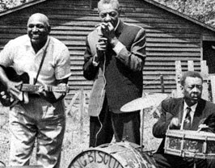

Sonny Boy Williamson


Bye Bye Bird (295k)
Don't Start Me Talkin' (296k)
Checkin' Up On My Baby (217k)
Рекомендуемые записи:
- King Biscuit Time (Arhoolie 310) - собрание
большинства самых лучших композиций SBW, также
полностью содержит (но только на CD) его
выступление на радио под названием King Biscuit Time.
- More Real Folk Blues (Chess). Практически все
альбомы записанные SBW на Chess очень хороши,
особенно этот.
- And Keep It To Yourself (Alligator 4787) - новое
переиздание Alligator Records включает в себя несколько
невероятных записей, исполненных как и без
аккомпанимента, так и с Memphis Slim и/или Matt Murphy.
- Всячески избегайте его записей с различными
английскими рок-группами ранних 60-х (Yardbirds, Animals, и
т.д.).